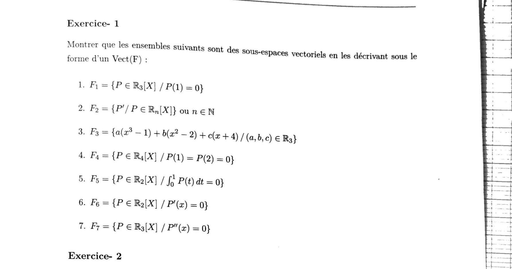
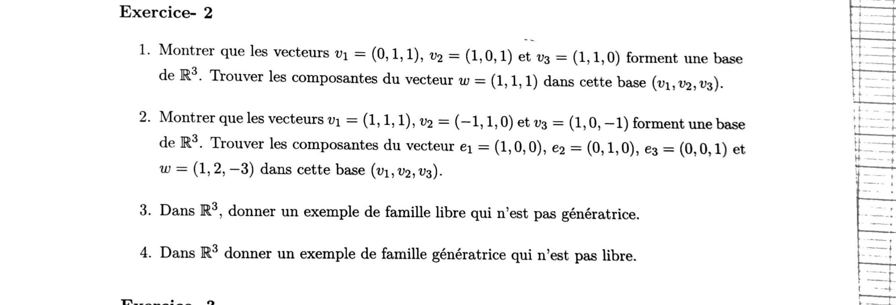
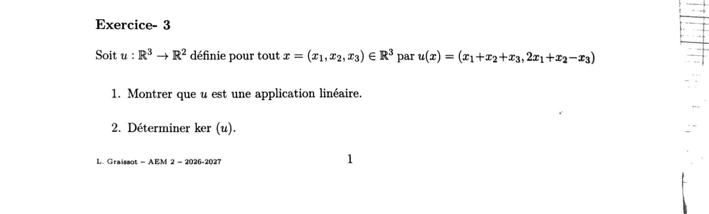
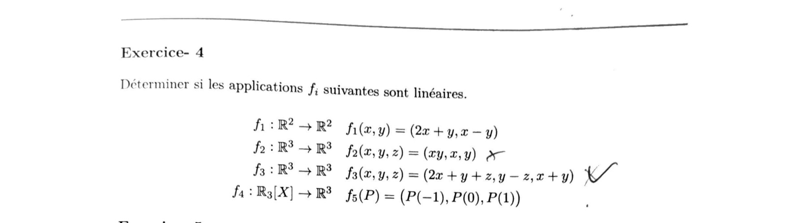
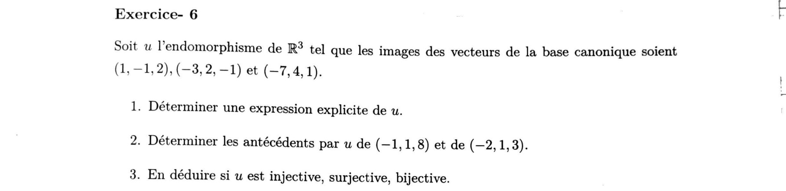
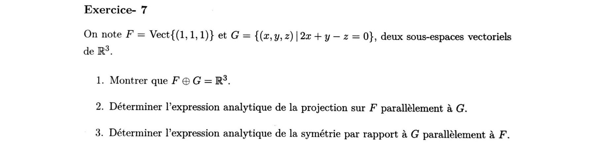
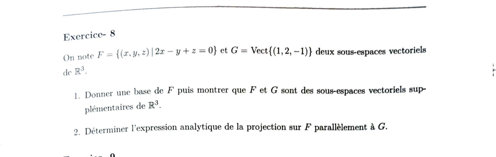
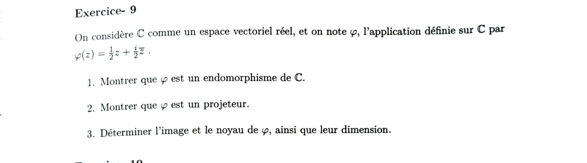
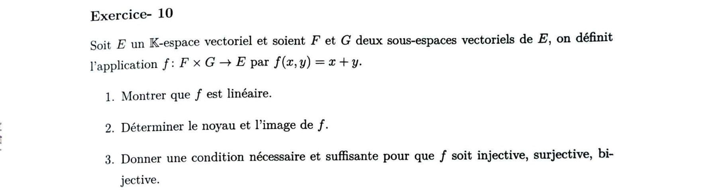

Applications linéaires
Pré-requis du cours « Matrices et applications linéaires » : rappels sur les espaces vectoriels (base, dimension, supplémentaires), puis applications linéaires, noyau et image. Cours de L. Graissot — ECAM AM2, 2026-2027. Le cours donné s'arrête pour l'instant à la notion de noyau/image, mais le TD2 est corrigé intégralement (10/10 exercices) ci-dessous.
1. Résumé de cours détaillé
1.1 Espace vectoriel — rappels
1.2 Famille libre, génératrice, base, dimension
2. Compléments sur les espaces vectoriels
3. Application linéaire
4. Noyau et image d'une application linéaire
2. Exercices d'entraînement (créés)
Noyau
\(f(x,y,z)=(0,0)\iff-2x=0\text{ et }y+3z=0\iff x=0\text{ et }y=-3z\). Donc \(\operatorname{Ker}f=\{(0,-3z,z)\mid z\in\mathbb R\}=\operatorname{Vect}\big((0,-3,1)\big)\), une droite vectorielle : \(\dim\operatorname{Ker}f=1\neq0\).
Image
Pour \((a,b)\in\mathbb R^2\) quelconque, on cherche \((x,y,z)\) tel que \(-2x=a\) et \(y+3z=b\) : il suffit de prendre \(x=-a/2\), \(z=0\), \(y=b\). Donc tout \((a,b)\) est atteint.
Somme directe
\(F\cap G\) : si \(\lambda(1,1)=\mu(1,-1)\), alors \(\lambda=\mu\) et \(\lambda=-\mu\), donc \(\lambda=\mu=0\) : \(F\cap G=\{0\}\). De plus \((1,1)\) et \((1,-1)\) forment une famille libre de 2 vecteurs dans \(\mathbb R^2\) (dimension 2) donc génératrice : \(F+G=\mathbb R^2\).
Projection
Pour \((x,y)\in\mathbb R^2\), on cherche \(a,b\) tels que \((x,y)=a(1,1)+b(1,-1)\) : \(a+b=x\), \(a-b=y\), donc \(a=\dfrac{x+y}2\), \(b=\dfrac{x-y}2\). Le projeté sur \(F\) est \(a(1,1)\).
3. Correction TD2 — Applications linéaires (10/10)

1) \(F_1=\{P\in\mathbb R_3[X]\mid P(1)=0\}\)
\(\mathbb R_3[X]\) a pour base \((1,X,X^2,X^3)\) : \(P=a_0+a_1X+a_2X^2+a_3X^3\). La condition \(P(1)=0\) s'écrit \(a_0+a_1+a_2+a_3=0\), soit \(a_0=-a_1-a_2-a_3\). Donc
\[ P=(-a_1-a_2-a_3)+a_1X+a_2X^2+a_3X^3=a_1(X-1)+a_2(X^2-1)+a_3(X^3-1). \]2) \(F_2=\{P'\mid P\in\mathbb R_n[X]\}\), \(n\in\mathbb N\)
\(\mathbb R_n[X]\) a pour base \((1,X,\dots,X^n)\). L'application \(P\mapsto P'\) est linéaire (dérivation), donc \(F_2\) est l'image de \(\mathbb R_n[X]\) par cette application linéaire — c'est un sous-espace vectoriel, engendré par les dérivées des vecteurs de base :
\[ (1)'=0,\quad (X)'=1,\quad (X^2)'=2X,\quad\dots,\quad (X^n)'=nX^{n-1}. \]Le vecteur nul \(0\) et les facteurs multiplicatifs \(k\) ne changent pas le sous-espace engendré (\(\operatorname{Vect}(kX^k)=\operatorname{Vect}(X^k)\) pour \(k\neq0\)) :
3) \(F_3=\{a(x^3-1)+b(x^2-2)+c(x+4)\mid(a,b,c)\in\mathbb R^3\}\)
Ici l'écriture sous forme de Vect est directement donnée par l'énoncé : \(F_3\) est par définition l'ensemble des combinaisons linéaires de \(x^3-1\), \(x^2-2\) et \(x+4\).
4) \(F_4=\{P\in\mathbb R_4[X]\mid P(1)=P(2)=0\}\)
\(P=a_0+a_1X+a_2X^2+a_3X^3+a_4X^4\). Les deux conditions donnent le système
\[ \begin{cases} a_0+a_1+a_2+a_3+a_4=0 &(P(1)=0)\\ a_0+2a_1+4a_2+8a_3+16a_4=0 &(P(2)=0)\end{cases} \]\((2)-(1)\) : \(a_1+3a_2+7a_3+15a_4=0\), donc \(a_1=-3a_2-7a_3-15a_4\). En reportant dans \((1)\) : \(a_0=-a_1-a_2-a_3-a_4=2a_2+6a_3+14a_4\). D'où, en regroupant par \(a_2,a_3,a_4\) (libres) :
\[ P=a_2\underbrace{(X^2-3X+2)}_{=(X-1)(X-2)}+a_3\underbrace{(X^3-7X+6)}_{=X(X-1)(X-2)} +a_4\underbrace{(X^4-15X+14)}_{=X^2(X-1)(X-2)} \](on vérifie \(P(1)=P(2)=0\) sur chacun des trois générateurs, par exemple \(2-3+1=0\) et \(2-6+4=0\) pour le premier).
5) \(F_5=\big\{P\in\mathbb R_2[X]\mid\int_0^1P(t)\,dt=0\big\}\)
\(P=a+bX+cX^2\). \(\displaystyle\int_0^1P(t)\,dt=a+\frac b2+\frac c3=0\), donc \(a=-\dfrac b2-\dfrac c3\). D'où
\[ P=b\Big(X-\frac12\Big)+c\Big(X^2-\frac13\Big) \]Pour éliminer les fractions, on choisit les générateurs proportionnels \(2X-1\) et \(3X^2-1\) (même droite/plan engendré) — vérification : \(\int_0^1(2t-1)\,dt=[t^2-t]_0^1=0\) et \(\int_0^1(3t^2-1)\,dt=[t^3-t]_0^1=0\).
6) \(F_6=\{P\in\mathbb R_2[X]\mid P'(x)=0\}\)
\(P'=0\) pour un polynôme signifie que \(P\) est constant : \(P=a\cdot1\).
7) \(F_7=\{P\in\mathbb R_3[X]\mid P''(x)=0\}\)
\(P''=0\) signifie que \(P\) est de degré \(\leqslant1\) (affine) : \(P=a+bX\).

1) \(v_1=(0,1,1),\,v_2=(1,0,1),\,v_3=(1,1,0)\) : base de \(\mathbb R^3\) ? Coordonnées de \(w=(1,1,1)\)
3 vecteurs dans un espace de dimension 3 : il suffit de montrer qu'ils forment une famille libre (alors libre \(\iff\) génératrice \(\iff\) base). On calcule le déterminant :
\[ \det(v_1,v_2,v_3)=\begin{vmatrix}0&1&1\\1&0&1\\1&1&0\end{vmatrix} =0(0\cdot0-1\cdot1)-1(1\cdot0-1\cdot1)+1(1\cdot1-0\cdot1)=0+1+1=2\neq0 \]On cherche \(\alpha,\beta,\gamma\) tels que \(w=\alpha v_1+\beta v_2+\gamma v_3\) :
\[ (1,1,1)=\alpha(0,1,1)+\beta(1,0,1)+\gamma(1,1,0)=(\beta+\gamma,\ \alpha+\gamma,\ \alpha+\beta) \]D'où le système \(\beta+\gamma=1,\ \alpha+\gamma=1,\ \alpha+\beta=1\). En additionnant les trois équations : \(2(\alpha+\beta+\gamma)=3\), donc \(\alpha+\beta+\gamma=\frac32\). En retranchant chaque équation à cette somme : \(\alpha=\frac32-1=\frac12\), de même \(\beta=\gamma=\frac12\).
2) \(v_1=(1,1,1),\,v_2=(-1,1,0),\,v_3=(1,0,-1)\) : base ? Coordonnées de \(e_1,e_2,e_3,w=(1,2,-3)\)
\[ \det(v_1,v_2,v_3)=\begin{vmatrix}1&-1&1\\1&1&0\\1&0&-1\end{vmatrix} =1(1\cdot(-1)-0\cdot0)-(-1)(1\cdot(-1)-0\cdot1)+1(1\cdot0-1\cdot1)=-1-1-1=-3\neq0 \]On pose \(\alpha v_1+\beta v_2+\gamma v_3=(\alpha-\beta+\gamma,\ \alpha+\beta,\ \alpha-\gamma)\) et on résout pour chaque cible \((x,y,z)\) : \(x=\alpha-\beta+\gamma,\ y=\alpha+\beta,\ z=\alpha-\gamma\) donnent \(\beta=y-\alpha,\ \gamma=\alpha-z\), puis en reportant dans la 1ʳᵉ équation \(\alpha-(y-\alpha)+(\alpha-z)=x\Rightarrow3\alpha=x+y+z\Rightarrow\alpha=\dfrac{x+y+z}3\).
Pour \(e_1=(1,0,0)\) : \(\alpha=\frac13\), \(\beta=0-\frac13=-\frac13\), \(\gamma=\frac13-0=\frac13\). Vérif. : \(\alpha-\beta+\gamma=\frac13+\frac13+\frac13=1=x\) ✓, \(\alpha+\beta=0=y\) ✓, \(\alpha-\gamma=0=z\) ✓.
Pour \(e_2=(0,1,0)\) : \(\alpha=\frac13\), \(\beta=1-\frac13=\frac23\), \(\gamma=\frac13-0=\frac13\).
Pour \(e_3=(0,0,1)\) : \(\alpha=\frac13\), \(\beta=0-\frac13=-\frac13\), \(\gamma=\frac13-1=-\frac23\).
Pour \(w=(1,2,-3)\) : \(\alpha=\dfrac{1+2-3}3=0\), \(\beta=2-0=2\), \(\gamma=0-(-3)=3\). Vérif. : \(\alpha-\beta+\gamma=0-2+3=1\) ✓, \(\alpha+\beta=2\) ✓, \(\alpha-\gamma=-3\) ✓. Cohérence avec la linéarité des coordonnées : comme \(w=e_1+2e_2-3e_3\), on doit avoir coords\((w)=\)coords\((e_1)+2\)coords\((e_2)-3\)coords\((e_3)=(0,2,3)\) — même résultat.
3) Dans \(\mathbb R^3\), famille libre qui n'est pas génératrice
\(\{(1,0,0),(0,1,0)\}\) : ces 2 vecteurs ne sont pas colinéaires, donc la famille est libre. Mais \(\operatorname{Vect}\) de 2 vecteurs a une dimension \(\leqslant2<3\), donc elle ne peut pas engendrer \(\mathbb R^3\) tout entier (elle n'engendre que le plan \(\{z=0\}\)).
4) Dans \(\mathbb R^3\), famille génératrice qui n'est pas libre
\(\{(1,0,0),(0,1,0),(0,0,1),(1,1,1)\}\) : elle contient la base canonique, donc elle est génératrice. Mais 4 vecteurs dans un espace de dimension 3 sont nécessairement liés (on ne peut pas avoir plus de vecteurs libres que la dimension) : par exemple \((1,1,1)=1\cdot(1,0,0)+1\cdot(0,1,0)+1\cdot(0,0,1)\) est une relation de dépendance non triviale.

1) Montrer que \(u\) est linéaire
Soient \(x=(x_1,x_2,x_3),\,y=(y_1,y_2,y_3)\in\mathbb R^3\) et \(\lambda,\mu\in\mathbb R\).
\[ \lambda x+\mu y=(\lambda x_1+\mu y_1,\ \lambda x_2+\mu y_2,\ \lambda x_3+\mu y_3) \] \[ u(\lambda x+\mu y)=\big((\lambda x_1+\mu y_1)+(\lambda x_2+\mu y_2)+(\lambda x_3+\mu y_3),\ 2(\lambda x_1+\mu y_1)+(\lambda x_2+\mu y_2)-(\lambda x_3+\mu y_3)\big) \]On regroupe chaque composante par \(\lambda\) et par \(\mu\) :
\[ u(\lambda x+\mu y)=\lambda\underbrace{(x_1+x_2+x_3,\,2x_1+x_2-x_3)}_{=u(x)} +\mu\underbrace{(y_1+y_2+y_3,\,2y_1+y_2-y_3)}_{=u(y)}=\lambda u(x)+\mu u(y) \]2) Déterminer \(\operatorname{Ker}(u)\)
\[ u(x)=(0,0)\iff\begin{cases}x_1+x_2+x_3=0\\2x_1+x_2-x_3=0\end{cases} \]De la 1ʳᵉ équation : \(x_1=-x_2-x_3\). On reporte dans la 2ᵉ :
\[ 2(-x_2-x_3)+x_2-x_3=0\iff-2x_2-2x_3+x_2-x_3=0\iff-x_2-3x_3=0\iff x_2=-3x_3 \]Puis \(x_1=-x_2-x_3=3x_3-x_3=2x_3\). Donc \((x_1,x_2,x_3)=(2x_3,-3x_3,x_3)=x_3(2,-3,1)\).

\(f_1:\mathbb R^2\to\mathbb R^2,\ f_1(x,y)=(2x+y,\,x-y)\)
Chaque composante est une combinaison linéaire de \(x,y\) sans terme constant ni produit : pour \(\lambda,\mu\in\mathbb R\), \(f_1(\lambda(x,y)+\mu(x',y'))=f_1(\lambda x+\mu x',\lambda y+\mu y') =\big(2(\lambda x+\mu x')+(\lambda y+\mu y'),\,(\lambda x+\mu x')-(\lambda y+\mu y')\big) =\lambda(2x+y,x-y)+\mu(2x'+y',x'-y')=\lambda f_1(x,y)+\mu f_1(x',y')\).
\(f_2:\mathbb R^3\to\mathbb R^3,\ f_2(x,y,z)=(xy,\,x,\,y)\)
La première composante \(xy\) est quadratique (produit de deux coordonnées), donc pas homogène de degré 1. Contre-exemple : \(f_2\big(2\cdot(1,1,1)\big)=f_2(2,2,2)=(4,2,2)\) alors que \(2f_2(1,1,1)=2(1,1,1)=(2,2,2)\) : \(4\neq2\).
\(f_3:\mathbb R^3\to\mathbb R^3,\ f_3(x,y,z)=(2x+y+z,\,y-z,\,x+y)\)
Les trois composantes sont des combinaisons linéaires de \(x,y,z\) : même argument que pour \(f_1\), chaque composante de \(f_3(\lambda u+\mu v)\) se sépare en \(\lambda\cdot(\text{composante de }f_3(u))+\mu\cdot(\text{composante de }f_3(v))\).
\(f_4:\mathbb R_3[X]\to\mathbb R^3,\ f_4(P)=(P(-1),\,P(0),\,P(1))\)
Pour \(P,Q\in\mathbb R_3[X]\), \(\lambda,\mu\in\mathbb R\) : l'évaluation d'un polynôme en un point fixé est linéaire, \((\lambda P+\mu Q)(a)=\lambda P(a)+\mu Q(a)\) pour tout \(a\). Donc
\[ f_4(\lambda P+\mu Q)=\big((\lambda P+\mu Q)(-1),(\lambda P+\mu Q)(0),(\lambda P+\mu Q)(1)\big) =\lambda\big(P(-1),P(0),P(1)\big)+\mu\big(Q(-1),Q(0),Q(1)\big)=\lambda f_4(P)+\mu f_4(Q) \]On traite \(f_1,f_3,f_4\) (les 3 applications linéaires de l'exercice 4 — \(f_2\) est exclue, elle n'est pas linéaire).
\(f_1(x,y)=(2x+y,x-y)\)
Noyau : \(2x+y=0\) et \(x-y=0\Rightarrow y=x\), puis \(2x+x=3x=0\Rightarrow x=0,\,y=0\).
Image — matrice de \(f_1\) dans les bases canoniques : \(\begin{pmatrix}2&1\\1&-1\end{pmatrix}\), \(\det=2(-1)-1(1)=-3\neq0\). Par le théorème du rang, \(\dim\operatorname{Ker}f_1+\dim\operatorname{Im}f_1=\dim\mathbb R^2=2\) ; \(\dim\operatorname{Ker}f_1=0\Rightarrow\dim\operatorname{Im}f_1=2=\dim\mathbb R^2\).
\(f_3(x,y,z)=(2x+y+z,\,y-z,\,x+y)\)
Noyau : \(2x+y+z=0,\ y-z=0,\ x+y=0\). De la 3ᵉ : \(y=-x\). De la 2ᵉ : \(z=y=-x\). On reporte dans la 1ʳᵉ : \(2x+(-x)+(-x)=0\) — toujours vraie, quel que soit \(x\). Donc pour tout \(x\in\mathbb R\), \((x,-x,-x)\) convient.
Image : \(\operatorname{Im}f_3=\operatorname{Vect}\big(f_3(e_1),f_3(e_2),f_3(e_3)\big) =\operatorname{Vect}\big((2,0,1),(1,1,1),(1,-1,0)\big)\). Par le théorème du rang, \(\dim\operatorname{Im}f_3=3-\dim\operatorname{Ker}f_3=3-1=2\) : ces 3 générateurs sont liés, 2 suffisent, par exemple \((2,0,1)\) et \((1,1,1)\) (non colinéaires). L'équation cartésienne du plan \(\operatorname{Im}f_3\) s'obtient via le vecteur normal \(n=(2,0,1)\times(1,1,1)\), calculé composante par composante :
\[ n=\big(0\cdot1-1\cdot1,\ 1\cdot1-2\cdot1,\ 2\cdot1-0\cdot1\big)=(-1,-1,2) \]Équation de plan : \(-x-y+2z=0\), soit \(x+y-2z=0\). Vérification sur les 3 générateurs : \((2,0,1)\to2+0-2=0\) ✓ ; \((1,1,1)\to1+1-2=0\) ✓ ; \((1,-1,0)\to1-1-0=0\) ✓.
\(f_4(P)=(P(-1),P(0),P(1))\)
Noyau : \(P(-1)=P(0)=P(1)=0\) avec \(\deg P\leqslant3\). \(P\) admet 3 racines distinctes \(-1,0,1\) : dans \(\mathbb R[X]\), \(P\) est donc divisible par \((X+1)X(X-1)=X^3-X\), qui est déjà de degré 3 = degré maximal autorisé. Le quotient est donc une constante \(k\) : \(P=k(X^3-X)\).
Image — théorème du rang : \(\dim\mathbb R_3[X]=4\), \(\dim\operatorname{Ker}f_4=1\Rightarrow \dim\operatorname{Im}f_4=4-1=3=\dim\mathbb R^3\).

1) Expression explicite de \(u\)
Pour \(x=(x_1,x_2,x_3)=x_1e_1+x_2e_2+x_3e_3\), la linéarité donne \(u(x)=x_1u(e_1)+x_2u(e_2)+x_3u(e_3)\) :
\[ u(x)=x_1(1,-1,2)+x_2(-3,2,-1)+x_3(-7,4,1) \]2) Antécédents de \((-1,1,8)\) et de \((-2,1,3)\)
On calcule d'abord le déterminant de la matrice \(U\) de \(u\) (colonnes = images de \(e_1,e_2,e_3\)) pour savoir à quoi s'attendre :
\[ \det U=\begin{vmatrix}1&-3&-7\\-1&2&4\\2&-1&1\end{vmatrix} =1(2\cdot1-4\cdot(-1))-(-3)\big((-1)\cdot1-4\cdot2\big)+(-7)\big((-1)(-1)-2\cdot2\big) \] \[ =1(2+4)+3(-1-8)-7(1-4)=6-27+21=0 \]\(\det U=0\) : \(u\) n'est pas bijective, il existe des vecteurs sans antécédent. On résout quand même les deux systèmes.
Pour \((-1,1,8)\) :
\[ \begin{cases}x_1-3x_2-7x_3=-1 &(1)\\-x_1+2x_2+4x_3=1 &(2)\\2x_1-x_2+x_3=8 &(3)\end{cases} \]\((1)+(2)\) : \(-x_2-3x_3=0\Rightarrow x_2=-3x_3\). De \((3)\) : \(2x_1-(-3x_3)+x_3=8\Rightarrow 2x_1+4x_3=8\Rightarrow x_1=4-2x_3\). On reporte dans \((1)\) :
\[ (4-2x_3)-3(-3x_3)-7x_3=-1\iff4-2x_3+9x_3-7x_3=-1\iff4+0\cdot x_3=-1 \]Contradiction (\(4\neq-1\)), quel que soit \(x_3\) : le système est incompatible.
Pour \((-2,1,3)\) : même méthode, \((1)+(2)\Rightarrow x_2=1-3x_3\), \((3)\Rightarrow 2x_1-(1-3x_3)+x_3=3\Rightarrow x_1=2-2x_3\). On reporte dans \((1)\) :
\[ (2-2x_3)-3(1-3x_3)-7x_3=-2\iff2-2x_3-3+9x_3-7x_3=-2\iff-1+0\cdot x_3=-2 \]Contradiction à nouveau (\(-1\neq-2\)).
Vérification indépendante — recherche de \(\operatorname{Im}u\) : comme \(\det U=0\), les colonnes sont liées. On vérifie \(u(e_3)=2u(e_1)+3u(e_2)\) : \(2(1,-1,2)+3(-3,2,-1)=(2-9,-2+6,4-3) =(-7,4,1)=u(e_3)\) ✓. Donc \(\operatorname{Im}u=\operatorname{Vect}\big(u(e_1),u(e_2)\big) =\operatorname{Vect}\big((1,-1,2),(-3,2,-1)\big)\), plan de normale \(n=(1,-1,2)\times(-3,2,-1)=(-1\cdot(-1)-2\cdot2,\ 2\cdot(-3)-1\cdot(-1),\ 1\cdot2-(-1)(-3))=(-3,-5,-1)\), d'équation \(3x+5y+z=0\) (après avoir multiplié par \(-1\)). Test : \(3(-1)+5(1)+8=10\neq0\) et \(3(-2)+5(1)+3=2\neq0\) — confirme dans les deux cas l'absence d'antécédent.
3) \(u\) injective / surjective / bijective ?
On calcule \(\operatorname{Ker}u\) pour appliquer le théorème du rang : \(u(x)=(0,0,0)\) donne (même système que ci-dessus avec second membre nul) \(x_2=-3x_3\), puis \(2x_1+4x_3=0\Rightarrow x_1=-2x_3\), et \((1)\) : \((-2x_3)-3(-3x_3)-7x_3=-2x_3+9x_3-7x_3=0\) — toujours vraie.

1) Montrer \(F\oplus G=\mathbb R^3\)
\(F\cap G=\{0\}\) : un élément de \(F\) s'écrit \(\lambda(1,1,1)\). Il appartient à \(G\) ssi \(2\lambda+\lambda-\lambda=2\lambda=0\), donc ssi \(\lambda=0\). Donc \(F\cap G=\{(0,0,0)\}\).
Dimensions : \(\dim F=1\). \(G\) est défini par une seule équation linéaire non triviale dans \(\mathbb R^3\) : \(z=2x+y\), donc \(G=\{(x,y,2x+y)\mid x,y\in\mathbb R\} =\operatorname{Vect}\big((1,0,2),(0,1,1)\big)\), \(\dim G=2\) (ces 2 générateurs ne sont pas colinéaires).
Par la formule des dimensions, \(\dim(F+G)=\dim F+\dim G-\dim(F\cap G)=1+2-0=3=\dim\mathbb R^3\). Comme \(F+G\subset\mathbb R^3\), on a \(F+G=\mathbb R^3\).
2) Projection \(p\) sur \(F\) parallèlement à \(G\)
Pour \(w=(x,y,z)\in\mathbb R^3\), on écrit \(w=u+v\) avec \(u=\lambda(1,1,1)\in F\) et \(v\in G\). \(v=w-u=(x-\lambda,y-\lambda,z-\lambda)\) doit vérifier \(2x-y-z\)… l'équation de \(G\) :
\[ 2(x-\lambda)+(y-\lambda)-(z-\lambda)=0\iff2x+y-z-2\lambda=0\iff\lambda=\frac{2x+y-z}2 \]Le projeté sur \(F\) est \(u=\lambda(1,1,1)\) :
\[ p(x,y,z)=\frac{2x+y-z}2\,(1,1,1) \]Vérifications : pour \((1,1,1)\in F\), \(\lambda=\frac{2+1-1}2=1\Rightarrow p=(1,1,1)\) ✓ (identité sur \(F\)). Pour \((1,0,2)\in G\) (car \(2\cdot1+0-2=0\)), \(\lambda=\frac{2+0-2}2=0 \Rightarrow p=(0,0,0)\) ✓ (nul sur \(G\)).
3) Symétrie \(s\) par rapport à \(G\) parallèlement à \(F\)
Par définition, \(s(w)=v-u=w-2u=w-2p(w)\) (on garde la partie \(G\), on inverse la partie \(F\)). Avec \(2p(w)=(2x+y-z)(1,1,1)\) :
\[ s(x,y,z)=(x,y,z)-(2x+y-z,\,2x+y-z,\,2x+y-z) \] \[ =(x-2x-y+z,\ y-2x-y+z,\ z-2x-y+z)=(-x-y+z,\ -2x+z,\ -2x-y+2z) \]Vérifications : pour \((1,0,2)\in G\), \(s=(-1-0+2,\,-2+2,\,-2-0+4)=(1,0,2)\) ✓ (identité sur \(G\)). Pour \((1,1,1)\in F\), \(s=(-1-1+1,\,-2+1,\,-2-1+2)=(-1,-1,-1)=-w\) ✓ (opposé sur \(F\)).

1) Base de \(F\), puis \(F,G\) supplémentaires
\(2x-y+z=0\iff y=2x+z\), donc \(F=\{(x,2x+z,z)\mid x,z\in\mathbb R\} =\operatorname{Vect}\big((1,2,0),(0,1,1)\big)\) — ces 2 vecteurs ne sont pas colinéaires : c'est une base de \(F\).
\(F\cap G\) : élément de \(G\) : \(\mu(1,2,-1)\). Condition d'appartenance à \(F\) : \(2\mu-2\mu+(-\mu)=-\mu=0\Rightarrow\mu=0\). Donc \(F\cap G=\{0\}\).
\(\dim F+\dim G=2+1=3=\dim\mathbb R^3\) et \(F\cap G=\{0\}\Rightarrow F+G=\mathbb R^3\) (même argument par la formule des dimensions qu'à l'exercice 7).
2) Projection sur \(F\) parallèlement à \(G\)
Pour \(w=(x,y,z)\), on écrit \(w=u+v\), \(v=\mu(1,2,-1)\in G\), \(u=w-v\in F\) :
\[ u=(x-\mu,\,y-2\mu,\,z+\mu)\ \text{et}\ 2(x-\mu)-(y-2\mu)+(z+\mu)=0 \] \[ \iff2x-2\mu-y+2\mu+z+\mu=0\iff2x-y+z+\mu=0\iff\mu=-2x+y-z \]D'où \(p(w)=u=(x-\mu,\,y-2\mu,\,z+\mu)\) :
\[ x-\mu=x-(-2x+y-z)=3x-y+z,\quad y-2\mu=y-2(-2x+y-z)=4x-y+2z,\quad z+\mu=z+(-2x+y-z)=-2x+y \]Vérifications : pour \((1,2,0)\in F\), \(p=(3-2+0,\,4-2+0,\,-2+2)=(1,2,0)\) ✓. Pour \((1,2,-1)\in G\), \(p=(3-2-1,\,4-2-2,\,-2+2)=(0,0,0)\) ✓.

1) \(\varphi\) est un endomorphisme de \(\mathbb C\) (en tant que \(\mathbb R\text{-ev}\))
Lemme : la conjugaison est \(\mathbb R\)-linéaire. En effet, pour \(\lambda\in\mathbb R\) et \(z=a+ib\) : \(\overline{\lambda z}=\overline{\lambda a+i\lambda b}=\lambda a-i\lambda b =\lambda(a-ib)=\lambda\bar z\), et \(\overline{z+w}=\bar z+\bar w\) (propriété usuelle de la conjugaison). Donc pour \(\lambda,\mu\in\mathbb R\) : \(\overline{\lambda z+\mu w}=\lambda\bar z+\mu\bar w\).
Soient \(z,w\in\mathbb C\), \(\lambda,\mu\in\mathbb R\) :
\[ \varphi(\lambda z+\mu w)=\frac12(\lambda z+\mu w)+\frac i2\overline{(\lambda z+\mu w)} =\frac12(\lambda z+\mu w)+\frac i2(\lambda\bar z+\mu\bar w) \] \[ =\lambda\Big(\frac12z+\frac i2\bar z\Big)+\mu\Big(\frac12w+\frac i2\bar w\Big)=\lambda\varphi(z)+\mu\varphi(w) \]2) \(\varphi\) est un projecteur (\(\varphi\circ\varphi=\varphi\))
On calcule d'abord \(\overline{\varphi(z)}\) : \(\overline{\varphi(z)} =\overline{\dfrac12z+\dfrac i2\bar z}=\dfrac12\bar z+\overline{\Big(\dfrac i2\Big)}\cdot\overline{\bar z} =\dfrac12\bar z-\dfrac i2z\) (car \(\bar i=-i\) et \(\overline{\bar z}=z\)).
\[ \varphi(\varphi(z))=\frac12\varphi(z)+\frac i2\overline{\varphi(z)} =\frac12\Big(\frac12z+\frac i2\bar z\Big)+\frac i2\Big(\frac12\bar z-\frac i2z\Big) \] \[ =\frac14z+\frac i4\bar z+\frac i4\bar z-\frac{i^2}4z=\frac14z+\frac i4\bar z+\frac i4\bar z+\frac14z \qquad(\text{car }-i^2=1) \] \[ =\Big(\frac14+\frac14\Big)z+\Big(\frac i4+\frac i4\Big)\bar z=\frac12z+\frac i2\bar z=\varphi(z) \]3) Image et noyau de \(\varphi\), dimensions
On pose \(z=x+iy\) (\(x,y\in\mathbb R\)) et on calcule \(\varphi(z)\) explicitement :
\[ \varphi(x+iy)=\frac12(x+iy)+\frac i2(x-iy)=\frac x2+\frac{iy}2+\frac{ix}2+\frac y2 =\frac{x+y}2+i\,\frac{x+y}2=\frac{x+y}2(1+i) \]Noyau : \(\varphi(z)=0\iff\dfrac{x+y}2=0\iff y=-x\iff z=x-ix=x(1-i)\).
Image : \(\varphi(z)=k(1+i)\) où \(k=\frac{x+y}2\) décrit tout \(\mathbb R\) quand \(x,y\) varient (ex. \(y=0,\,x=2k\)).
Vérification (théorème du rang) : \(\dim_{\mathbb R}\mathbb C=2\) (base \((1,i)\)) et \(\dim\operatorname{Ker}\varphi+\dim\operatorname{Im}\varphi=1+1=2\) ✓.

1) Montrer que \(f\) est linéaire
Soient \((x_1,y_1),(x_2,y_2)\in F\times G\), \(\lambda,\mu\in\mathbb K\). Dans \(F\times G\), \(\lambda(x_1,y_1)+\mu(x_2,y_2)=(\lambda x_1+\mu x_2,\ \lambda y_1+\mu y_2)\).
\[ f\big(\lambda(x_1,y_1)+\mu(x_2,y_2)\big)=(\lambda x_1+\mu x_2)+(\lambda y_1+\mu y_2) =\lambda(x_1+y_1)+\mu(x_2+y_2)=\lambda f(x_1,y_1)+\mu f(x_2,y_2) \]2) Noyau et image de \(f\)
Noyau : \(f(x,y)=0\iff x+y=0\iff y=-x\), avec \(x\in F\) et \(y\in G\). La condition \(y=-x\in G\) équivaut à \(x\in-G=G\) (car \(G\) est un sous-espace vectoriel, stable par \(-1\cdot\)). Donc la condition complète est \(x\in F\) et \(x\in G\), c'est-à-dire \(x\in F\cap G\).
Image : \(\operatorname{Im}f=\{x+y\mid x\in F,\,y\in G\}\), qui est précisément la définition de la somme de sous-espaces.
3) Condition nécessaire et suffisante d'injectivité / surjectivité / bijectivité
Injective \(\iff\operatorname{Ker}f=\{(0,0)\}\iff F\cap G=\{0\}\) (d'après la description de \(\operatorname{Ker}f\) ci-dessus, réduite au seul \(x=0\)).
Surjective \(\iff\operatorname{Im}f=E\iff F+G=E\) (par définition de la surjectivité et l'expression de \(\operatorname{Im}f\)).
📂 Documents donnés
Fichier original lié à ce chapitre. Cliquez pour ouvrir.
Scan complet du cours (L. Graissot)
TD2 — Applications linéaires (L. Graissot)
Cursus AM2 · Mathématiques · L. Graissot, 2026-2027. Cours en cours (s'arrête au Noyau/Image), TD2 corrigé intégralement (10/10 exercices, pas de corrigé officiel disponible — résolu maison). Voir aussi Ch1 — Analyse asymptotique (même scan, p.5 → 16).